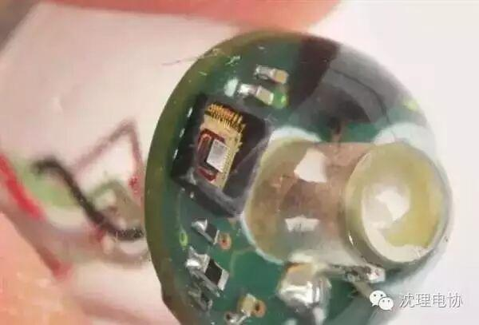
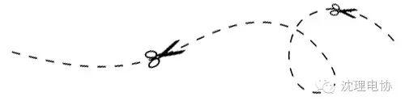
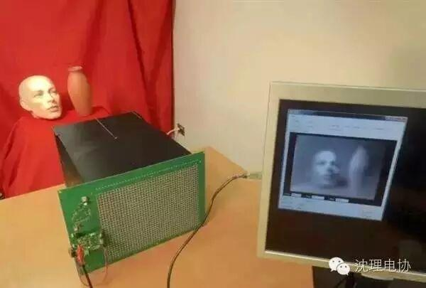
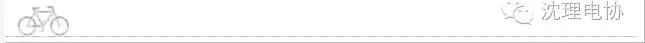
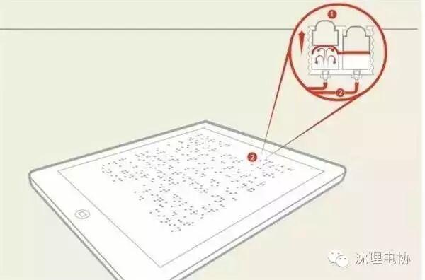
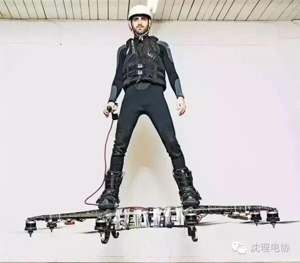
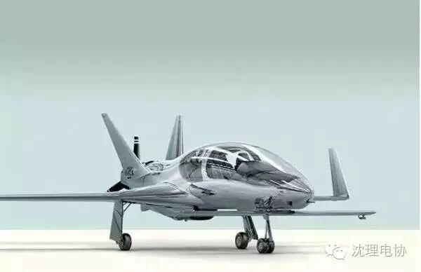
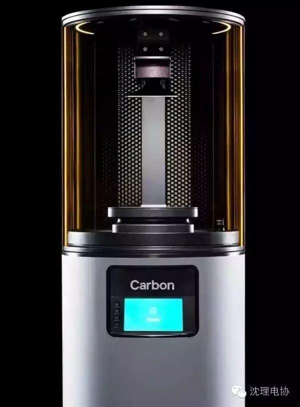
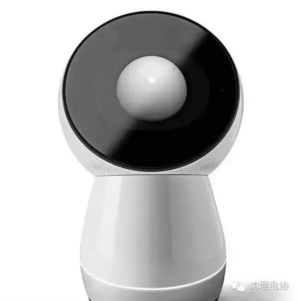
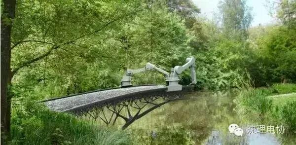

盘点2016年十大科技发明
2016十大科技发明

能监测生命体征的“药丸”——可吞服“听诊器”EnteroPhone
发明人：哈佛医学院布莱根妇女医院的乔凡尼·特拉法索、麻省理工学院的罗伯特·兰格、MIT林肯实验室的阿尔伯特·斯威士顿、泰德·休斯、克里·约翰逊、格雷格·奇卡雷利
所属机构：哈佛医学院、MIT林肯实验室
成熟度：1/5
2012年，当哈佛医学院布莱根妇女医院的胃肠病学专家、生物医疗工程师乔凡尼·特拉法索和MIT林肯实验室的生物材料专家阿尔·斯威士顿在一个工作场合偶遇时，都意识到了这一点。两人一拍即合，决定联手打造特拉法索所谓的“可以吞服的听诊器”。
“从根本上来说，它就是一个微型扩音器，能够听到医生想要听到的那些声音。”斯威士顿解释说。这款名为“EnteroPhone”的生理状态监测药丸包含有一些特制的、可以“收听”心跳声和肺部活动声音的迷你扩音器，以及一个可以测量体核温度的迷你体温计。它是目前唯一一种可以同时跟踪三项关键生命体征的药丸式检测器。
目前，这种药丸的样品已在猪身上测试成功，该研究团队计划接下来进行人体试验。如果一切顺利，那么军方或许有一天会用这一设备在战场监测士兵的健康状况；马拉松运动员也能在比赛中密切监测自己的心率情况。另外，医生也能借用它发现心率失常或哮喘的早期症状


能自己发电的照相机——自给自足的“永恒照相机”
发明人：什里·那亚尔、米哈伊尔·弗里德伯格、丹尼尔·希姆斯
所属机构：哥伦比亚大学
成熟度：3/5
计算机科学家什里·那亚尔带领哥伦比亚大学计算机视觉实验室的研究人员制造出了这款“永恒照相机”，其关键在于让将光转化为电的光电二极管身兼两职。在数码相机中，光电二极管主要负责测量光；而在太阳能电池板内，它们的主要职责是捕获能量。现在，“永恒照相机”内的光电二极管承担起了这两份工作。如此一来，只要有光存在，该照相机就能产生足够的电力不停拍照。
“永恒照相机”的摄像传感器使用1200个光电二极管，排成30×40的阵列，每个二极管都会检测穿过透镜的光并将它变成电信号，一个电信号代表一个像素，这些电信号集合在一起就能创造出一幅图像，就像在普通相机中一样。但与普通相机不同的是，“永恒照相机”的每个光电二极管都连接到一个专用电路中，它可以收集吸收到的光线产生一些电力，将它们存在电容中供自己使用。
未来，“永恒照相机”可用于对电力供应有特殊要求的专业项目，如追踪野生动物、降低太空探索项目中的电力消耗或提供24小时安保监控等。


超好用盲人平板电脑——“神圣盲文”平板电脑
发明人：布伦特·吉莱斯皮、亚历克斯·鲁索曼诺、马克·伯恩斯和赛莱·奥莫德莱
所属机构：密歇根大学
成熟度：1/5
在布伦特·吉莱斯皮、亚历克斯·鲁索曼诺、马克·伯恩斯和赛莱·奥莫德莱等人领导下，密歇根大学的科学家希望研制出一种一次可以显示一整页的新型盲文电子阅读器。
该项目部分受到了奥莫德莱的启发，她本人就是视力受损者。奥莫德莱说：“现有的盲文显示器不允许用户接收很多盲文编码和图像信息，而数学和音乐必须立体呈现，一般会跨越好几行，现有盲文显示器无法显示。”
从理论上说，现有技术可以让盲文显示器像平板电脑那样实现整页浏览，但成本极高，如现有单行显示器使用的电子元件成本超过3000美元，整页显示价格可能高达55000美元，让普通人望而兴叹。为了降低成本，研究人员最后选择用微流体来制造这款称为“神圣盲文”的设备。目前研制出的样品只有几英寸宽，研究人员希望将其扩大实现整页显示，并将成本控制在1000美元到2000美元之间。

让梦想照进现实——悬浮滑板Omni
发明人：来自加拿大蒙特利尔的发明家亚历山德鲁·杜鲁
公司：全悬浮滑板
成熟度：3/5
2015年5月22日，加拿大魁北克的乌阿霍湖在温暖阳光照射下显得十分平静，但一个像从《回到未来2》中飞出来的东西出现在水面上，打破了这种宁静。亚历山德鲁·杜鲁站在一个自制滑板上“飞”到了离水面16英尺高的地方。他总共“飞行”了275.9米，创下“悬浮滑板最远飞行距离”，完爆此前滑板飞行50英尺的纪录。此后不久，吉尼斯世界纪录官方正式对此表示认可。杜鲁说：“这个滑板可以给你其他机器无法提供的感觉，它无可比拟。”
杜鲁和其研究团队目前正在研制功能更强大、外形更漂亮也更安全的第二款样本，并计划2017年推出正式产品。他说：“很多人希望未来能用上悬浮滑板，我认为他们的美梦就要成真了。”
不过，Omni公司目前对该滑板上的锂电池过重表示担忧，他们打算以后用燃料发动机代替。如此看起来，悬浮滑板虽然离普通人的生活还有一段距离，但这些高科技原型让人们相信，有朝一日人类是可以像阿拉丁一样坐上飞毯飞起来的。
稍等一下马上回来

最炫酷的私人飞机——“女武神”飞机
发明人：戴维·劳瑞
公司：美国民营飞机制造商深蓝色
成熟度：3/5
独立航空工程师戴维·劳瑞发明了“史上最拉风的私人飞机”、“私人机中的战斗机”—“女武神”。它不仅设计酷炫、“颜值”超高，同时还拥有同级飞机中最快的速度和最远的航程。
从外观上看，“女武神”不仅漂亮，而且未来感十足。劳瑞坦言，自己在设计时充分考虑到了美学问题。他解释说：“机体前部外凸，后部内收，两者结合之处有个连接点。”
除了高颜值外，劳瑞还希望“女武神”节能、高效、便于操纵，因此，他借鉴战斗机的设计，让机翼采用鸭式布局。这种在主机翼前再设置一个小副翼的好处很明显：可大幅提高飞机操控度之余，还能和主机翼形成耦合效应，为飞机提供额外的升力。“女武神”操作非常简单，劳瑞说：“就像驾驶汽车一样。”
“女武神”的发动机和螺旋桨都在飞机尾部，涡轮增压下的发动机动力达到了350匹，而且能够通过加氧维持高空飞行的速度。得益于出色外形和动力设计，其飞行速度最高可达483千米/小时，比一般单螺旋桨飞机快；航程为1931千米，同时消耗的燃料更少。
谁都向往在天空自由飞翔，但前提是你得有钱。“女武神”和普通人之间唯一隔着的，是75万美元的价格。劳里认为，这一定价只比同级私人飞机贵一点儿，相当合理。

迄今最快的3D打印机——M13D打印机
发明人：约瑟夫·德·西莫内、亚历克斯·叶尔莫什金、艾德·萨穆尔斯基
公司：碳
成熟度：5/5
2015年3月，在一场Ted演讲中，约瑟夫·德·西莫内静悄悄地实现了三维打印革命，他只用六分多钟，就打印出了一个手掌大小的网格球体，而过去打印出这样一个球体一般需要几个小时。
作为一名不断创立新企业的企业家，西莫内在他以前的博士后亚历克斯·叶尔莫什金帮助下，发明了这一快速三维打印方法。他们没有用现有的常规技术，而是从电影《终结者》里液态金属机器人T-1000那里获得灵感。
就像那个虚拟机器人一样，他们发明的M1打印机从液体树脂中“长出”固体——利用“连续液体界面生产”技术，使用紫外线和氧气“雕琢”树脂。结果非常成功，与传统3D打印相比，M1的打印速度提高了25到100倍。它也能处理更多材料，包括所有聚合物。与传统分层打印机相比，连续液体界面生产技术的分辨率更高，非常适合商业定制。
美国《每日科学》网站在今年3月的报道中指出，这种3D打印技术使物体可以产生于液态介质，而非像过去25年所使用的层层打印，它代表了3D打印的一种新方式，开启了创新的新应用领域，不仅包括健康保健和医疗，也包括汽车和航空等重大行业。

贴心的机器人伙伴——又萌又暖的吉宝
发明人：辛西娅·布雷泽尔、乔森纳·罗斯、法达达·法瑞狄、安迪·阿特金斯、瑞奇·桑德伍斯基、托德·派克
公司：吉宝
成熟度：5/5
和许多优秀的人工智能助手一样，Jibo可以接电话、发出提醒。它“体重”7.6磅，身高约1英尺，可以识别人脸，熟悉并适应家庭成员的习惯爱好，还可以根据你的情绪讲你喜欢的睡前故事，或按你的要求给你拍张照片，在厨房教你做菜等。
Jibo内置的360°麦克风和语音处理系统，可以让家庭成员在房间的任意位置与机器人交流。它还可以通过图像、声音和肢体运动和小孩互动，在逗小孩高兴的同时，丰富小孩的知识。
那些在最初的众筹活动中多掏了100美元的人，可以得到一个研发版的Jibo，而且在今年夏天售货之后，他们还可以不停往指令表里添加新内容。
布雷泽尔表示，与其他家庭机器人相比，Jibo向前迈出了关键的一步。Echo是亚马逊推出的一款智能控制设备，同时包含一位名叫Alexa的语音助理。

能打印桥梁的机器人——多轴3D打印MX3D
发明人：蒂姆·古特詹斯、约里斯·拉曼、盖斯·范·德-费尔登
公司：MX3D
成熟度：3/5
该研究团队首先研制了控制工业机械臂的软件，然后装配挤压机——3D打印机“吐出”材料的那个部分，接着使用铜和铝进行打印。大部分3D打印机将挤压机装到一个框架上，并赋予它们三个运动轴，而MX3D则有6个运动轴。它是一个能灵活移动的机器人，可以和被打印结构一起运动或围绕它行动，从而打印出几乎任何尺寸或形状的物体。
为了展示MX3D创造耐用大型物品的能力，该研究团队脑洞大开，决定在拥有165条运河的阿姆斯特丹打印出一个能够使用的钢铁大桥。他们希望借助这一活动证明这一技术的潜能的同时给人们更多启发。
编辑 信息部 丁宇亭